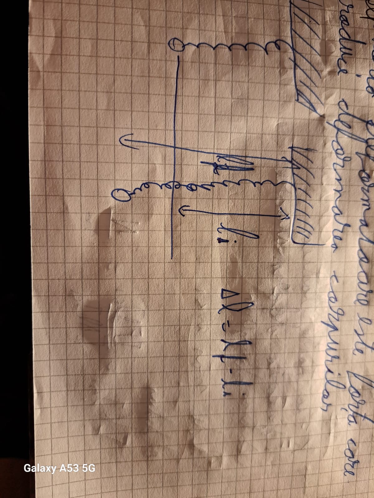
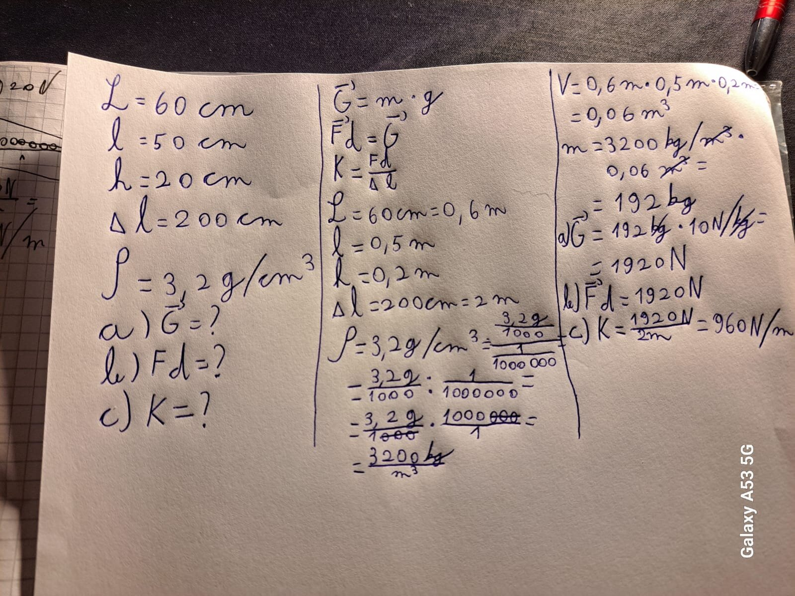

Inapoi
Facut de Bogdan Serban <:
Interactiunea este o proprietate generala
a corpurilor si reprezinta actiunea reciproca
intre 2 corpuri
Fenomenele care apar in urma
interactiunii se numesc efecte ale
interactiunii
efectul interactiunii poate fi:
- Dinamic -Consta in schimbarea starii de miscare
- Static -Consta in deformari
- Plastic
- Spunem despre un corp ca se
deformeaza plastic atunci cand
incetarea actiunii corpul nu isi revine
la forma initiala! ex: plastilina, piatra, hartia
- Elastic
- Spunem despre un corp ca se
deformeaza elastic atunci cand
incetarea actiunii corpul isi revine
la forma initiala! ex: elastic, burete, arcul
Acum ca stim ce inseamna "interactiunea" putem sa ne pregatim pentru testul
de luni! (12/12/2024)
Deci, pentru test avem de invatat urmatoarele:
- Marimi fizice+ tabel cu marimi fizice
- (Deja stiut)Interactiunea
- Forta - Clasificare
- Forta de Greutate - Caracterizare
- Forta deformatoare - Caracterizare
- Tipuri de probleme rezolvate
Bruh
Oricum sa incepem cu:
1. Marimi fizice
Ele se caracterizeaza prin:
- Simbol
- Val numerica
- U. de mas in SI
Marimile fizice pot fi:
- Fundamentale
Sunt 7 marimi fizice Fundamentale
ele sunt:
| Marime fiz |
U de mas |
Simbol |
Simbol U de mas |
| lungime |
metrul |
m |
L |
| masa |
kilogramul |
kg |
m |
| timpul |
secunda |
s |
t |
| intensitatea curentului electric |
Amperul |
A (rotunjit) |
I (mare de mana) |
| temperatura |
grade Kelvin |
K |
T |
| cant. de substanta |
molul |
mol |
Cant. de substanta |
| candela |
candela |
L sau l (de mana) |
cd |
- Marimi fizice derivate
Cred ca e clar ca sunt cele care nu sunt fundamentale <:
- Marimi fizice scalare
Ca exemple avem: masa, timpul, densitatea
Ele se caracterizeaza prin:
-Simbol
-Valoarea numerica
-U de mas in SI
- Marimi fizice vectoriale
Exemple: v , F, G, a; (toate au sageata sus)
Se reprezinta printr-un vector AB (sageata sus)
adica o sageata de mai mai multe patratele
O marime fizica vectoria se caracterizeaza prin:
- Simbol
- Val. numerica
- U de mas in Si
- Sens
- Directie
- Punct de aplicare
Sensul + Directia = Orientare (foarte important cred 😨)
CE TREBUIE SA STIM DESPRE O MARIME FIZICA !!!!!:
- Simbol
- Definitie
- Expresia mat
- Explicatia
- U de mas in SI
- Def u de mas in SI
Marimi fiz studiate in a 6-a (o nu 😨)
| Denumire |
Simbol |
Formula de calcul |
U de mas in SI |
Instrument de mas |
| Aria |
S sau A |
S = L*l |
m2 |
Hartie milimetrica |
| Volumul |
V |
V = L*l*h |
m3 |
Cilindru gradat |
| Timpul |
t |
----- |
s |
Ceasul,Cronometrul |
| Viteza |
v |
v = d/t |
m/s |
Vitezometrul |
| Acceleratia |
a |
a = Δv/Δt |
m/s2 |
Accelerometrul |
| Masa |
m |
---- |
kg |
Cantarul,balanta |
| Densitatea |
S(mare de mana fara coada de sus stanga) |
= m/V |
kg/m3 |
Densimetrul (pentru lichide) |
| Forta de greutate |
G |
=m*g, unde g=9.8N/kg |
N |
Dinamometrul |
| Temperatura |
T |
---- |
K |
Termometrul |
| Intensitatea curentului |
I |
Se face in clasa a VIII-a |
A |
Ampermetrul |
| Tensiunea electrica |
U |
Se face in clasa a VIII-a |
V |
Voltmetrul |
| Lungimea |
l(de mana) |
---- |
m |
Rigla, Ruleta |
AM TERMINAT IN SFARSIT!!!! 😆
Ok sa speram ca urmatoarele sunt mai usoare pentru ca mi-a luat aproape o ora jumate sa scriu toata asta🫢
3. Forta Clasificare
SUNTEM DOAR LA 3?????
Oricum, sa continuam
- Simbol: F; F(cu sageata sus)
- Forta este o marime fizica vectoriala ce exprima cantitativ interactiunea dintre 2 corpuri
- Expresia matematica: F = m*a
- Explicatie:
F-Forta
m-masa corpului
a- acceleratia
- Unitatea de mas in SI
- dedus
A deduce o marime fizica inseamna a pune expresia matematica intre parateze patrate
[F]si = [m]si * [a]si = kg * m/s2 = N (newton)
- direct
[F]si = N (newtonul)
- Def u de mas in SI
un Newton reprezinta o forta ce actioneaza asupra unui corp cu masa de un kg si careia ii imprima o aceleratie de un m/s2
4. Forta de Greutate
Hmm asta nu este chiar asa de incet
- Simbol: G; G(cu sageata sus)
- Greutatea este forta cu care un corp este atras de pamant
- Expresia matematica: G = m * g
- Explicatie:
G-Greutatea
m-masa corpului
g-acceleratia gravitationala
- Unitatea de mas in SI
- dedus
A deduce o marime fizica inseamna a pune expresia matematica intre parateze patrate
[G]si = [m]si * [g]si = kg * N/kg = N (newton)
- direct
[G]si = N (newtonul)
- Def u de mas in SI
un Newton reprezinta greutatea unui corp atunci cand forta de greutate actioneaza asupra unui corp cu masa de un kg si caruia ii imprima o aceleratie de 10N/kg2
5. Forta Deformatoare
Perfect! Doar 2 ramase
- Simbol: Fd; Fd(cu sageata sus)
- Forta deformatoare este forta care produce deformarea corpurilor
- Expresia matematica: Fd= K * Δl
- Explicatie:
Fd-Forta deformatoare
K-constanta elastica
Δl - alungirea
- Unitatea de mas in SI
- dedus
A deduce o marime fizica inseamna a pune expresia matematica intre parateze patrate
[Fd]si = [K]si * [Δl]si = N/m * m = N (newton)
- direct
[Fd]si = N (newtonul)
- Def u de mas in SI
un Newton reprezinta forta deformatoare care produce deformarea unui corp care se doformeaza elastic cu constanta elastica de un N/m su careua uu oridyce o alungire de un metru
Si o poza:

6. E timpul pentru o problema
Eu recomand sa va uitati si la problemele facute in clasa pentru ca poate ne va da si altele la test!
eu zic ca 3 supuncte sunt ok

Alte tipuri de probleme sunt cele in care se cere masa (masa = G/g) dintr-un corp suspendat sau invers (Fd = G, G = m * g, Δl= Fd/K)
Noroc la test! 👋